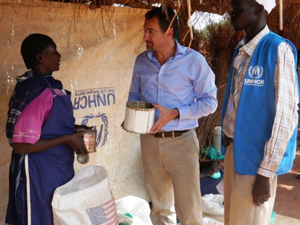

Interview: Humanitarian Coordinator for South Sudan
24 Oct 2012

24 August 2012 - Humanitarian Coordinator Toby Lanzer at food distribution site in Yida refugee camp, Unity State. Credit: UNMISS
Despite the challenges, UN agencies and NGOs are strong and preparing to meet rising needs, says Toby Lanzer.
As the world’s youngest country, South Sudan faces numerous challenges. More than half its people don’t have enough to eat, and inter-communal violence has left hundreds of thousands in need of basic life-saving aid. Since conflict broke out in Sudan’s Southern Kordofan and Blue Nile States in 2011, over 170,000 refugees have fled to South Sudan’s Unity and Upper Nile States in search of safety. Hundreds of refugees continue to arrive every month, many of them malnourished and destitute.
UN agencies and humanitarian organizations are providing life-saving aid to displaced people and those who are short of food, but lack of access and limited funding are affecting their work. This year’s humanitarian appeal for US$1.1 billion is only 57 per cent funded so far.
Toby Lanzer was appointed Humanitarian Coordinator for South Sudan in July 2012. Here, he talks about the country’s humanitarian and development priorities.
Q. What are your priorities for South Sudan?
A. There are many priorities in South Sudan – development, security and humanitarian. There is a link and overlap between these priorities. As the Humanitarian Coordinator, the single biggest priority for me is to make sure that the refugees arriving from Sudan have the protection and assistance that they need immediately. We also need to frame that response within a development context. Unfortunately, it is quite possible that the refugees won’t be able to go home soon. I think we need to do everything we can to empower the refugees so that they can look after themselves – their children can continue their education and people can take advantage of the upcoming planting season. We have to treat people with as much dignity as possible and not simply as victims. These are survivors of what is happening in Sudan and we should do what we can to strengthen their ability to cope with this very difficult situation.
The number of food insecure people has gone up considerably in South Sudan. About 2.4 million people are receiving food assistance. I think the World Food Programme (WFP) is doing a fantastic job at changing the approach so that it’s less about hand-outs and more about helping communities develop assets and resilience so that they can eventually become food secure.
Ultimately, South Sudan could care for its own population whether it’s on a day-to-day basis or in moments of distress. The country has a long record of seasonal floods so I think disaster risk reduction, early warning and preparedness have to be very high on our priority list. I was in Warrup State and Northern Bahr El Ghazal where recent floods have affected three times as many people compared to 2011.
Q. Has there been enough funding to carry out humanitarian work?
A. I think the support for South Sudan had been quite strong throughout this year but the needs have become far greater than we had anticipated. In the beginning of 2012, the consolidated appeal was seeking $776 million but now that is above $1.1 billion. While it is true that the appeal is only funded at 57 per cent, it is 57 per cent of a very, very large amount. I think that we should recognize that the donors, who themselves are living through a period of austerity, have actually stepped up quite well to provide the financial support that UN agencies and NGOs require. In the specific case of refugees, I know that UNHCR requires $20 million just to see through to the end of 2012. What I would like to do is to call on the donors now that it is the onset of the dry season – a six month period where aid agencies have a moment to not only respond to ongoing needs but preposition supplies for the following rainy season. So it is extremely important for money to be available right now so that the agencies can do as much as possible, not only for the dry season but beyond it as the rains strike.
Q. You were in Sudan before the independence of South Sudan. How different is South Sudan today?
A. I had the opportunity to visit Juba and Jonglei in 2009 very briefly and Juba today is unrecognizable in a very positive sense. When I visited three years ago, there weren’t many roads that were paved; now there are many. There were no buildings more than two storeys high, now we have many buildings that are taller. Juba is definitely a different city today. Sadly in other areas, like in Jonglei, problems still persist and there are tensions on the ground.
There have been efforts to address it by the State and the peacekeeping mission. I think it is fair to say that there have been some improvements in terms of security. When we look at the number of incidents of extreme violence and clashes that have taken place, there have been over 200 this year throughout the country, in particular in Jonglei. Last year there were twice as many. How many people lost their lives this year compared to last year? Well, that number is well below 50 per cent. So let’s hope that the trend in terms of violence continues to be positive and that things continue to improve. It is reassuring that NGOs and UN agencies are on the ground – they are strong and getting ready to meet the needs as they arise. I think they are doing an increasingly good job, working hand in hand with state institutions and making sure that the capacity to manage things is stronger and stronger.
Q. Have there been many people of South Sudanese origin returning this year?
A. We anticipated that about 250,000 people would return from Sudan to South Sudan this year. We haven’t seen that number. We are so far up to about 125,000 people – I think that’s a fair planning figure for 2013. What we recently saw are positive developments in the negotiations in Addis Ababa, where the South Sudan and Sudan Governments have now agreed on a bill whereby the citizens of both countries can travel to the other country to live and work. Also they have the right to property in the other country. This means that the South Sudanese who are currently in Sudan have the rights and the opportunity to stay in Sudan. I think the chances are that many of them will choose to do that instead of returning to South Sudan at this stage. So I don’t expect a particularly large influx of returnees next year; however, the planning figure of about 125,000 does oblige us to be ready and make sure the reintegration process is as smooth as possible. The International Organization for Migration (IOM) and the UN Refugee Agency (UNHCR) are responsible for this and they will, of course, get my full support, but I expect them to work very closely with the Government of South Sudan on the reintegration process.
Q. What will you be focusing on next year?
A. Next year, my focus will be on education which I think is very vital for today and the coming years in South Sudan -- whether it is primary or secondary or tertiary education, or whether it is education for refugees or internally displaced people or people who are just poor. We need to make sure that UNICEF is spearheading this effort. We need to make sure that every boy and girl has access to schools and an opportunity to learn. If we don’t get that foundation right, all the other work will be much, much more difficult. An educated population is the foundation for addressing institution building, rule of law and human rights. So I will be supporting UNICEF as much as I possibly can. There will be many priorities but education, in addition to meeting the acute humanitarian needs, will be at the forefront of my work.

{kind=link}